library(tidyverse)
#> ── Attaching core tidyverse packages ──────────────────────── tidyverse 2.0.0 ──
#> ✔ dplyr 1.1.4 ✔ readr 2.1.5
#> ✔ forcats 1.0.0 ✔ stringr 1.5.1
#> ✔ ggplot2 3.5.2 ✔ tibble 3.3.0
#> ✔ lubridate 1.9.4 ✔ tidyr 1.3.1
#> ✔ purrr 1.1.0
#> ── Conflicts ────────────────────────────────────────── tidyverse_conflicts() ──
#> ✖ dplyr::filter() masks stats::filter()
#> ✖ dplyr::lag() masks stats::lag()
#> ℹ Use the conflicted package (<http://conflicted.r-lib.org/>) to force all conflicts to become errors
library(here)
#> here() starts at /Users/lsibjb/Documents/Code/PHM5002
here::i_am("PHM5002-Tutorial.qmd")
#> here() starts at /Users/lsibjb/Documents/Code/PHM5002
# Define point colors and shapes for each qc_type in the plots
qc_colors <- c(SAMPLE = "grey50", QC = "red", BLANK = "#00db7c", RESP = "blue")
qc_shapes <- c(SAMPLE = 1, QC = 21, BLANK = 23, RESP = 22)PHM5002: Metabolomics Data Preprocessing
From Raw Data to Reliable Analytical Results
1. Introduction
Welcome to this R-based tutorial on data processing of a targeted plasma lipidomics dataset. We will use the dataset published by Tan et al., Arterioscler Thromb Vasc Biol, 2022 as an example. In that study, a panel of 413 plasma lipids was quantified by liquid chromatography–tandem mass spectrometry (LC–MS/MS) using multiple reaction monitoring (MRM). We begin with preprocessed LC-MS raw data, i.e., peak-area data that were generated using the MRMkit software (Teo et al., Anal. Chem., 2020). See Figure 1 for an overview of the typical data processing flow, of which we will cover aspects of the postprocessing, quality control and reporting.
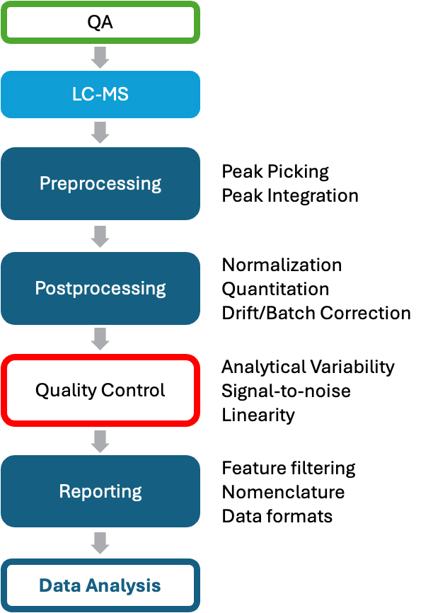
2. Loading R packages
We will use several packages from the tidyverse for this tutorial. The here package will be used to tracking data file paths. Furthermore, we define the point colors and shapes for the QC sample types, which will be used later in the plots.
Important
NOTE: It is a good practice to restart R before you run or rerun code to clear all loaded data and variables. This can be done via Session -> Restart R or via SHIFT-ALT-0 (Windows) or SHIFT-⌘-0 (MacOS).
3. Importing raw data
We begin by loading the table containing peak area data. After import, it is important to verify that the data were loaded correctly, completely, and with appropriate column types. Missing values or undefined text entries can cause columns to be interpreted as character rather than numeric data.
d_orig <- readr::read_csv(
file = here("data/SPERFECT_RawAreas_Tutorial.csv"),
col_names = TRUE,
trim_ws = TRUE,
na = c("NA", "ND", "n.d."))
#> Rows: 445 Columns: 416
#> ── Column specification ────────────────────────────────────────────────────────
#> Delimiter: ","
#> chr (3): filename, batch_id, qc_type
#> dbl (413): CE 14:0, CE 15:0, CE 16:0, CE 16:1, CE 16:2, CE 17:0, CE 17:1, CE...
#>
#> ℹ Use `spec()` to retrieve the full column specification for this data.
#> ℹ Specify the column types or set `show_col_types = FALSE` to quiet this message.
head(d_orig)
#> # A tibble: 6 × 416
#> filename batch_id qc_type `CE 14:0` `CE 15:0` `CE 16:0` `CE 16:1` `CE 16:2`
#> <chr> <chr> <chr> <dbl> <dbl> <dbl> <dbl> <dbl>
#> 1 PBLK-1.mzML Longit_1 BLANK 47.3 54.6 440. 143. 0.568
#> 2 RQC-1-10.m… Longit_1 RESP 87.3 262. 23404. 3271. 248.
#> 3 RQC-1-20.m… Longit_1 RESP 210. 530. 37327. 4811. 226.
#> 4 RQC-1-40.m… Longit_1 RESP 335. 186. 52478. 4923. 307.
#> 5 RQC-1-60.m… Longit_1 RESP 189. 239. 66109. 5774. 417.
#> 6 RQC-1-80.m… Longit_1 RESP 592. 230. 75214. 6100. 256.
#> # ℹ 408 more variables: `CE 17:0` <dbl>, `CE 17:1` <dbl>, `CE 18:0` <dbl>,
#> # `CE 18:1` <dbl>, `CE 18:1 d7 (ISTD)` <dbl>, `CE 18:2` <dbl>,
#> # `CE 18:3` <dbl>, `CE 20:1` <dbl>, `CE 20:2` <dbl>, `CE 20:3` <dbl>,
#> # `CE 20:4` <dbl>, `CE 20:5` <dbl>, `CE 22:0` <dbl>, `CE 22:1` <dbl>,
#> # `CE 22:4` <dbl>, `CE 22:5` <dbl>, `CE 22:6` <dbl>, `CE 24:0` <dbl>,
#> # `CE 24:1` <dbl>, `CE 24:4` <dbl>, `CE 24:5` <dbl>, `CE 24:6` <dbl>,
#> # `Cer d18:0/16:0` <dbl>, `Cer d18:0/18:0` <dbl>, `Cer d18:0/20:0` <dbl>, …4. Preparing the Data (Data Wrangling)
First, we will rearrange the imported dataset for the subsequent steps. We remove the .mzML file extension from the entries in the sample_id column, which will then be renamed to sample_id. Furthermore, we will add a column containing the analysis order number (run_no), assuming the imported data were in the actual analysis sequence. In the second step, we will convert the data into a long format. In this format, each observation (a unique sample/lipid pair) uses a single row. Columns then represent the measured variables for that observation, such as peak area or retention time.
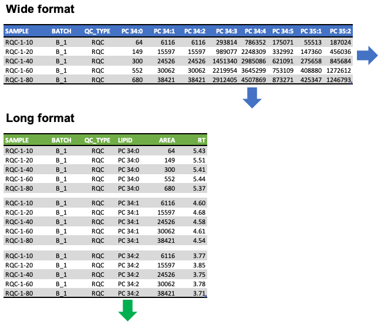
d_orig <- d_orig |>
mutate(filename = stringr::str_replace(filename, ".mzML", "")) |>
mutate(run_no = row_number(), .before = 1)
d_full <- d_orig |>
pivot_longer(
names_to = "lipid",
values_to = "area",
cols = -run_no:-qc_type
) |>
arrange(lipid) |>
rename(sample_id = filename)
head(d_full)
#> # A tibble: 6 × 6
#> run_no sample_id batch_id qc_type lipid area
#> <int> <chr> <chr> <chr> <chr> <dbl>
#> 1 1 PBLK-1 Longit_1 BLANK CE 14:0 47.3
#> 2 2 RQC-1-10 Longit_1 RESP CE 14:0 87.3
#> 3 3 RQC-1-20 Longit_1 RESP CE 14:0 210.
#> 4 4 RQC-1-40 Longit_1 RESP CE 14:0 335.
#> 5 5 RQC-1-60 Longit_1 RESP CE 14:0 189.
#> 6 6 RQC-1-80 Longit_1 RESP CE 14:0 592.Example Workflow
5. Subset the data
We will focus on a selected subset of the measured analytes in this first part of the tutorial for illustrative purposes. For this, few measured triacylglycerol (TG) species and the corresponding internal standard will be selected. The code to process the full dataset can be found at the end of this tutorial (Section 15).
We subset the measured lipid species using regular expressions and include the TG internal standard as well. You can modify the code below to select other lipid species.
d_subset <- d_full |>
filter(str_detect(lipid, "^TG 5[2-9]:[2-8] \\[\\-") | lipid == "TG 48:1 d7 [-15:0] (ISTD)")
head(d_subset)
#> # A tibble: 6 × 6
#> run_no sample_id batch_id qc_type lipid area
#> <int> <chr> <chr> <chr> <chr> <dbl>
#> 1 1 PBLK-1 Longit_1 BLANK TG 48:1 d7 [-15:0] (ISTD) 2190563.
#> 2 2 RQC-1-10 Longit_1 RESP TG 48:1 d7 [-15:0] (ISTD) 274380.
#> 3 3 RQC-1-20 Longit_1 RESP TG 48:1 d7 [-15:0] (ISTD) 585267.
#> 4 4 RQC-1-40 Longit_1 RESP TG 48:1 d7 [-15:0] (ISTD) 1018345.
#> 5 5 RQC-1-60 Longit_1 RESP TG 48:1 d7 [-15:0] (ISTD) 1236618.
#> 6 6 RQC-1-80 Longit_1 RESP TG 48:1 d7 [-15:0] (ISTD) 1663751.6. A first look into the data
Now we take a first look on how the analysis went. To do this, we inspect the peak areas of over the analysis sequence. Different QC samples were included in this analysis:
- QC (Quality Controls): Pooled plasma samples, co-extracted with study samples
- BLANK (Blanks): Samples without matrix (plasma) to determine background signals
- RESP (Response QCs): To check for linear response
ggplot(d_subset, aes(x = run_no, y = area)) +
geom_point(aes(colour = qc_type,
fill = qc_type,
shape = qc_type),
size = 1,
alpha =0.7,
stroke = 0.3) +
facet_wrap(vars(lipid),
ncol = 4,
nrow = 4,
scales="free_y") +
scale_shape_manual(na.value = NA, values = qc_shapes) +
scale_fill_manual(values = qc_colors, na.value = NA) +
scale_colour_manual(values = qc_colors, na.value = NA) +
scale_x_continuous(breaks = seq(0, max(d_subset$run_no), by = 100 )) +
scale_y_continuous(limits = c(0, NA)) +
theme_bw(base_size = 8) 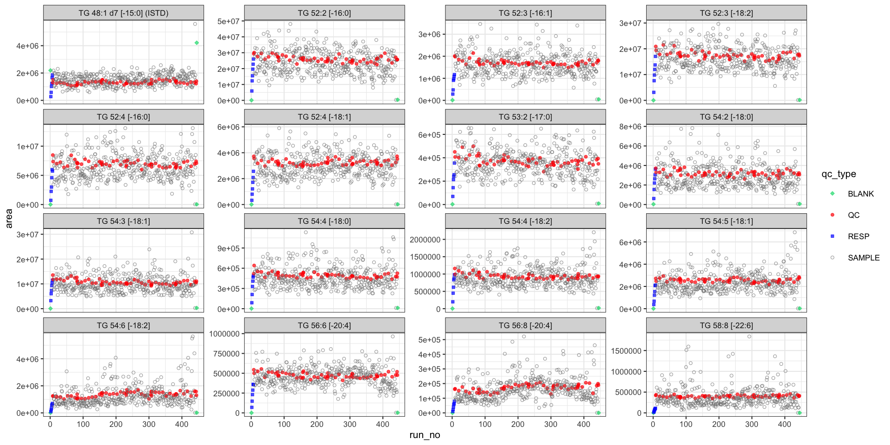
The quality-control (QC) samples (red points) are relatively stable and exhibit low variability throughout the analysis (4 days). This suggests a low analytical variability in the measurement of the shown analytes. In contrast, the study samples (grey) show greater variability, reflecting biological variability in addition to analytical variability.
What do you observe for the spiked-in internal standard (top left)? What about the blanks?
7. Assessing Linearity of Measurements
Analyzed sample amounts need to be carefully chosen when measuring analytes covering a large concentration range. It is a trade-off between sensitivity and not exceeding the linear range of the measurement. Below we plot the response curves and fit linear regression lines to the data. We observe an overall good linearity for most species.
# Extract sample details from the sample name
d_rqc <- d_subset |>
filter(qc_type == "RESP") |>
separate(col = sample_id,
into = c("type","curve_no","amount"),
sep = "-",
remove = FALSE, convert = TRUE)
d_rqc$amount <- as.numeric(d_rqc$amount)
# plot
ggplot(d_rqc, aes(x = amount, y = area)) +
geom_point(size = 2, alpha =0.7, stroke = 0.3) +
facet_wrap(vars(lipid), ncol = 5, nrow = 4, scales="free_y") +
ggpmisc::stat_poly_line(linewidth = 0.5, se = FALSE) +
ggpmisc::stat_poly_eq(aes(label = after_stat(rr.label)),
size = 2.4,
lineheight = 1) +
scale_x_continuous(limits = c(0, NA)) +
scale_y_continuous(limits = c(0, NA)) +
labs(x = "Rel. Sample Amount (%)") +
theme_bw(base_size = 8)
#> Registered S3 methods overwritten by 'ggpp':
#> method from
#> heightDetails.titleGrob ggplot2
#> widthDetails.titleGrob ggplot2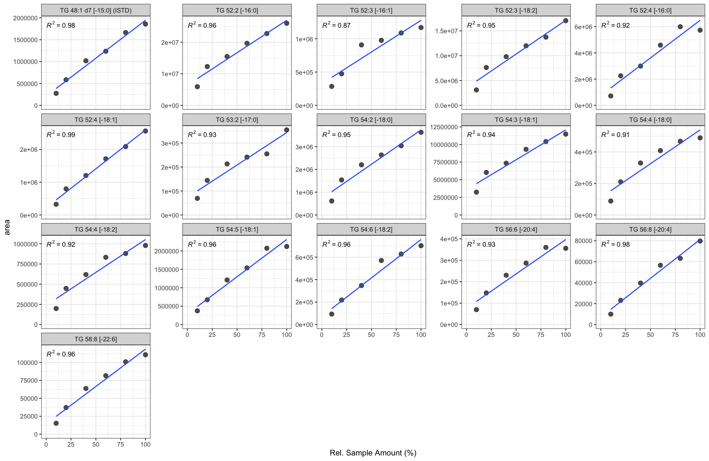
8. Normalization and Quantification
To reduce technical variability and convert peak areas to concentrations, we will use internal-standard (ISTD) normalization. Internal standards are compounds with similar chemical/physicochemical properties to the analytes, but are distinguishable in the used assay. Suitable ISTDs include isotope‑labelled versions of the analytes or structurally similar compounds not present in the sample matrix.
Below we iterate over each sample and divide the peak area of each lipid species by the peak area of the corresponding TG class‑specific ISTD in the sample. The normalized areas are stored in a new column norm_area.
d_subset <- d_subset |>
group_by(sample_id) |>
mutate(
norm_area = area / area[lipid == "TG 48:1 d7 [-15:0] (ISTD)"]
)Since we know how much ISTD was spiked into each sample, we can calculate the concentration of each lipid species using:
\[ [Lipid] = \biggl(\frac{Lipid_i}{ISTD_{class}}\biggr) \biggl(\frac{ISTD_{vol}* [ISTD_{class}]}{Sample_{amount}}\biggr) \]
\(Lipid_i\) is the peak area of a lipid species, \(ISTD_{class}\) is the peak area of the class-specific ISTD used for normalization, \(ISTD_{vol}\) is the volume of ISTD solution spiked into the sample, \([ISTD_{class}]\) is the concentration of ISTD in the mix, and \(Sample_{amount}\) is the amount (volume) of sample extracted.
In our case, 4.5 µL of ISTD solution was spiked into 10 µL plasma, and the concentration of the TG ISTD in the spike-in solution is 70.53 µmol/L. We hence calculate the concentrations as shown below, with the calculated concentrations being stored in the new column concentration. The concentration unit is µmol/L.
d_subset <- d_subset |>
group_by(sample_id) |>
mutate(
concentration = norm_area * (4.5 * 70.53) / 10
)9. Inspecting the Normalized Data
Normalization with a class-specific ISTD can reduce variability that resulted from sample processing and the LC–MS analysis, but it may also introduce noise or artifacts. Let’s examine how the data look after normalization.
plot_runscatter <- function(data, variable){
data <- data |> filter(!str_detect(qc_type, "BLANK|RQC"))
ggplot(data, aes(x = run_no, y = {{variable}})) +
geom_point(aes(colour = qc_type,
fill = qc_type,
shape = qc_type),
size = 1, alpha =0.7, stroke = 0.3) +
facet_wrap(vars(lipid),
ncol = 4,
nrow = 4,
scales="free_y") +
scale_shape_manual(na.value = NA, values = qc_shapes) +
scale_fill_manual(values = qc_colors, na.value = NA) +
scale_colour_manual(values = qc_colors, na.value = NA) +
scale_x_continuous(breaks = seq(0, max(d_subset$run_no), by = 100 )) +
scale_y_continuous(limits = c(0, NA)) +
theme_bw(base_size = 8)
}
plot_runscatter(d_subset, concentration)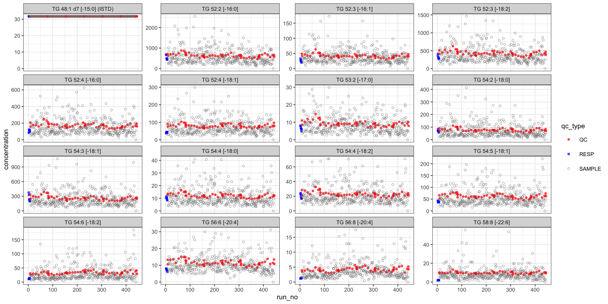
10. Drift and Batch Correction
Some drifts are still present in the data. We will attempt to correct these drifts and batch effects, assuming that the QCs reflect the same drift and batch effects affecting the study samples. First, we apply within-batch loess smoothing.
Note: In the publication another algorithm was used, which was based on the all data points rather than just QCs.
d_subset$y_predicted <- NULL # clean up in case chunk is rerun
# Define a robust loess-based smoothing function
get_loess <- function(d) {
tryCatch({
dt <- tibble::tibble(run_no = seq(min(d$run_no), max(d$run_no), 1))
res <- stats::loess(
data = subset(d, qc_type == "QC"), formula = conc_log ~ run_no, span = 0.8) |>
stats::predict(dt) |> as.numeric()
res},
error = function(e) {return(rep(NA_real_, length(d$run_no)))})
}
# Log-transform concentration values to make loess more robust
d_subset$conc_log <- log2(d_subset$concentration ) # log-transform concentration
# Calculate loess fit for each lipid in each batch
d_subset <- d_subset |>
group_by(lipid, batch_id) |>
nest() |>
mutate(y_predicted = purrr::map(data, \(x) get_loess(x))) |>
unnest(cols = c(data, y_predicted))
# Smooth study samples based on the loess fit of the QCs and
# and transform values back to concentration scale
d_subset <- d_subset |>
group_by(lipid, batch_id) |>
mutate(
y_predicted = y_predicted - median(y_predicted, na.rm = TRUE),
conc_adj = 2^(conc_log - y_predicted)) |>
ungroup()Let’s have a look how the data looks after drift correction.
plot_runscatter(d_subset, conc_adj)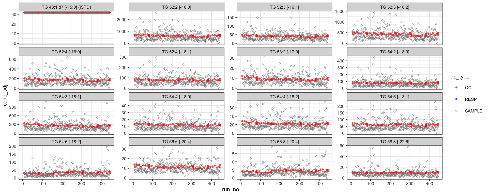
Next, we apply QC-based median-centering to correct batch effects and plot the data again.
# Between-batch correction via QC-based median centering
d_subset <- d_subset |>
group_by(lipid, batch_id) |>
mutate(
conc_median = median(conc_adj[qc_type == "QC"], na.rm = TRUE),
conc_adj = conc_adj/conc_median
)
# Rescaling to grand mean
d_subset <- d_subset |>
group_by(lipid) |>
mutate(
conc_adj = conc_adj * mean(conc_median[qc_type == "QC"], na.rm = TRUE)
) |>
ungroup()
plot_runscatter(d_subset, conc_adj)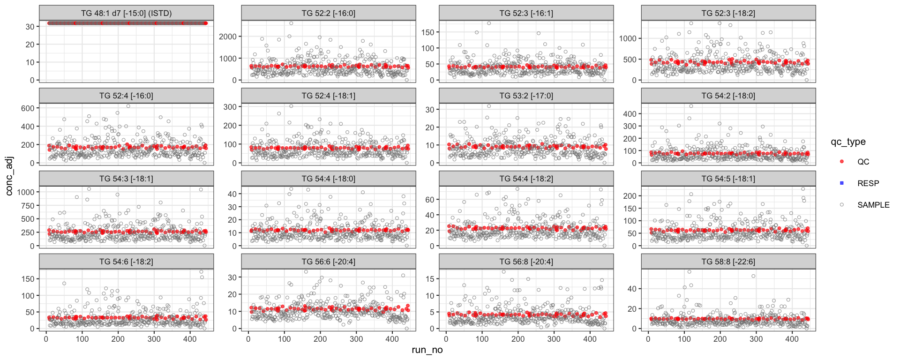
What do you observe? Do you have any concerns with this approach?
11. Calculate Quality Control (QC) Metrics
To evaluate the analysis quality and filter the data, we calculate QC metrics for each lipid species. These include the analytical coefficient of variation (%CV) based on the QCs and the signal-to-blank ratio.
cv <- function(x) sd(x, na.rm = TRUE)/mean(x, na.rm = TRUE) * 100
d_qc <- d_subset |>
group_by(lipid) |>
summarise(
signal_blank_ratio = median(area[qc_type == "SAMPLE"], na.rm = TRUE) /
median(area[qc_type == "BLANK"], na.rm = TRUE),
cv_qc_area = cv(area[qc_type == "QC"]),
cv_qc_concadj = cv(conc_adj[qc_type == "QC"]),
mean_conc = mean(conc_adj[qc_type == "SAMPLE"], na.rm = TRUE)
)
d_qc
#> # A tibble: 16 × 5
#> lipid signal_blank_ratio cv_qc_area cv_qc_concadj mean_conc
#> <chr> <dbl> <dbl> <dbl> <dbl>
#> 1 TG 48:1 d7 [-15:0] (IS… 0.469 9.21 1.76e-13 31.7
#> 2 TG 52:2 [-16:0] 103. 7.23 5.94e+ 0 586.
#> 3 TG 52:3 [-16:1] 54.1 6.91 5.70e+ 0 38.9
#> 4 TG 52:3 [-18:2] 184. 7.98 7.66e+ 0 395.
#> 5 TG 52:4 [-16:0] 302. 7.20 6.81e+ 0 158.
#> 6 TG 52:4 [-18:1] 285. 6.29 6.10e+ 0 73.2
#> 7 TG 53:2 [-17:0] 65.5 10.6 7.34e+ 0 8.61
#> 8 TG 54:2 [-18:0] 55.1 8.94 8.09e+ 0 72.5
#> 9 TG 54:3 [-18:1] 51.7 8.91 6.60e+ 0 242.
#> 10 TG 54:4 [-18:0] 62.8 7.20 5.19e+ 0 11.3
#> 11 TG 54:4 [-18:2] 73.3 7.31 6.22e+ 0 21.4
#> 12 TG 54:5 [-18:1] 123. 6.39 6.10e+ 0 56.7
#> 13 TG 54:6 [-18:2] 115. 13.2 8.76e+ 0 30.1
#> 14 TG 56:6 [-20:4] 364. 6.61 6.91e+ 0 10.6
#> 15 TG 56:8 [-20:4] 1011. 13.0 7.86e+ 0 3.94
#> 16 TG 58:8 [-22:6] 488. 6.18 5.82e+ 0 8.79| What do you observe? How do the %CVs compare with clinical diagnostics–grade TG assays?
12. Feature Filtering
Next, we exclude features (lipid species) that were not reliably measured, i.e., features that do not meet predefined QC criteria such as acceptable analytical variability and sufficient signal-to-blank ratio. From the QC metrics above, all processed TG species have %CV < 25% and a signal-to-blank ratio > 10. Thus, all measured species meet our QC criteria and will be reported.
See Section 18 below for the results of the feature filtering when applied to the full dataset.
13. Principal Component Analysis (PCA)
As a final step, we generate a PCA plot from the concentration data to assess overall structure and detect any clear outliers that may need to be investigated.
| What do you observe? What patterns would you expect to see?
plot_pca <- function(data, variable) {
d_pca <- data |>
filter(qc_type %in% c("QC", "SAMPLE"), !str_detect(lipid, "ISTD")) |>
select(sample_id, qc_type, batch_id, lipid, {{variable}}) |>
pivot_wider(names_from = "lipid", values_from = {{variable}}) |>
drop_na() # NA rows of rows that could not be smoothed before
d_metadata <- d_pca |> select(sample_id, qc_type, batch_id) |> distinct()
m_raw <- d_pca |> select(-qc_type, -batch_id) |>
select(where( ~ !any(is.na(.)))) |>
column_to_rownames("sample_id") |>
as.matrix()
m_raw <- log2(m_raw)
# get pca result with annotation
pca_res <- prcomp(m_raw, scale = TRUE, center = TRUE)
pca_annot <- pca_res |> broom::augment(d_metadata)
pca_contrib <- pca_res |> broom::tidy(matrix = "eigenvalues")
p <- ggplot(
data = pca_annot,
aes(
x = .fittedPC1,
y = .fittedPC2,
color = qc_type,
fill = qc_type,
shape = qc_type,
label = "sample_id"
)
) +
ggplot2::geom_hline(yintercept = 0,
linewidth = 0.4,
color = "grey80") +
ggplot2::geom_vline(xintercept = 0,
linewidth = 0.4,
color = "grey80") +
ggplot2::stat_ellipse(
geom = "polygon",
level = 0.95,
alpha = 0.1,
linewidth = 0.3
) +
ggplot2::geom_point(size = 1) +
ggplot2::scale_color_manual(values = qc_colors, drop = TRUE) +
ggplot2::scale_fill_manual(values = qc_colors, drop = TRUE) +
ggplot2::scale_shape_manual(values = qc_shapes, drop = TRUE) +
ggplot2::theme_light(base_size = 10) +
ggplot2::xlab(glue::glue("PC1 ({round(pca_contrib[[1,'percent']]*100,1)}%)")) +
ggplot2::ylab(glue::glue("PC2 ({round(pca_contrib[[2,'percent']]*100,1)}%)")) +
ggplot2::theme(
panel.grid = ggplot2::element_line(linewidth = 0.3, color = "grey95"),
panel.border = ggplot2::element_rect(linewidth = 1, color = "grey70"),
aspect.ratio = 1
)
p
}
plot_pca(d_subset, conc_adj)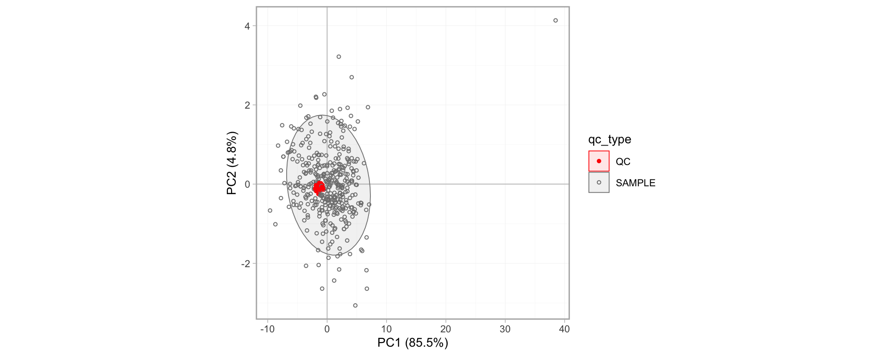
14. Exclusion of an Outlier Sample
We identified a potential outlier in the PCA. After a detailed review, we determined that this outlier resulted from a technical error during sample extraction. Therefore, we excluded this sample from the dataset and re-plotted the PCA to confirm its removal and inspect the updated data structure.
d_subset_filt <- d_subset |> filter(sample_id != "LT_batch6_51")
plot_pca(d_subset_filt, conc_adj)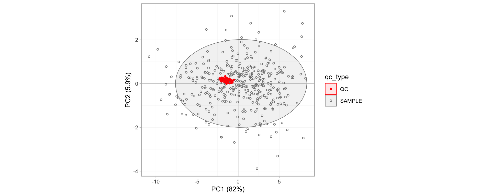
15. Saving the Final Dataset
We now export the final, drift/batch-corrected concentration data as a wide CSV table, ready for downstream analysis.
d_final <- d_subset_filt |>
filter(qc_type == "SAMPLE", !str_detect(lipid, "ISTD")) |>
pivot_wider(id_cols = c(sample_id, qc_type), names_from = "lipid", values_from = "conc_adj")
write_csv(d_final, here("output/results-tg-subset.csv"))Processing the Full Dataset
In the following sections, we process the full dataset, rather than the illustrative subset used above. We will apply the same workflow to all measured lipid species.
16. Data Postprocessing (Full Dataset)
We first import a table that maps each measured lipid species with the ISTD it should be normalized with. Additionally, we import a table that defines the concentrations of the ISTD in the spiked-in ISTD mix solution. Then, we join the tables together as shown in Figure 3, then group the table into ISTD groups and proceed with normalization and quantification as described in section 8. Drift- and batch correction is performed as in section 10.
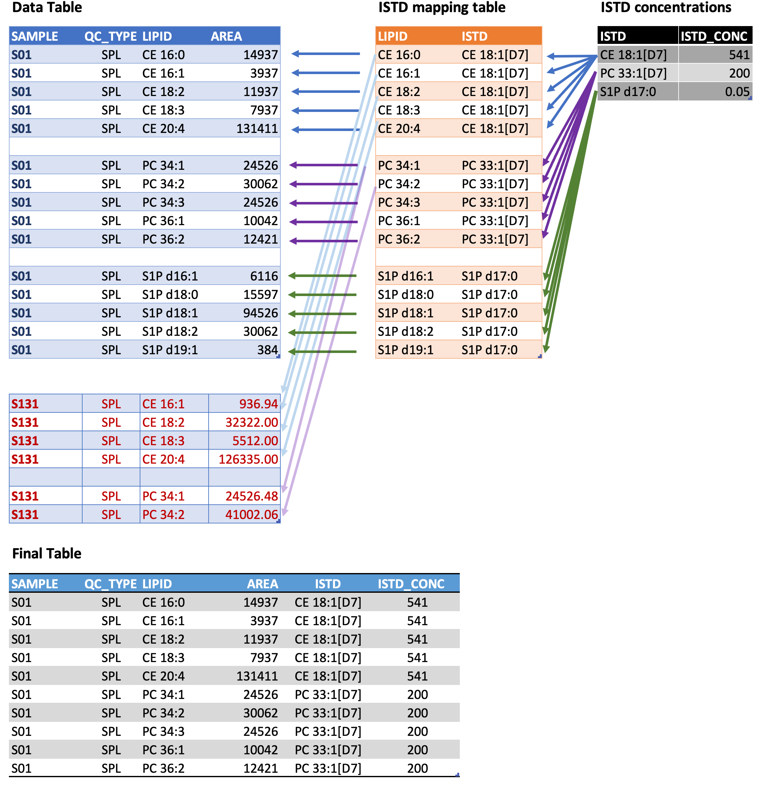
d_istd_map <- read_csv(
file = here("data/ISTD_mapping.csv"),
col_names = TRUE, trim_ws = TRUE, col_types = "c")
d_istd_conc <- read_csv(
file = here("data/ISTD_conc.csv"),
col_names = TRUE, trim_ws = TRUE, col_types = "c")
d_full <- d_full |>
left_join(d_istd_map, by = c("lipid")) |>
left_join(d_istd_conc, by = c("istd")) |>
mutate(is_istd = (lipid == istd)) |>
group_by(istd, sample_id) |>
mutate(
norm_area = area/area[is_istd],
concentration = norm_area * istd_conc_nmolar / 1000 * 4.5 / 10) |>
ungroup()
d_full$y_predicted <- NULL # clean up in case chunk is rerun
# Log-transform concentration values to make loess more robust
d_full$conc_log <- log2(d_full$concentration ) # log-transform concentration
# Calculate loess fit for each lipid in each batch
d_full <- d_full |>
group_by(lipid, batch_id) |>
nest() |>
mutate(y_predicted = purrr::map(data, \(x) get_loess(x))) |>
unnest(cols = c(data, y_predicted))
# Smooth study samples based on the loess fit of the QCs and
# and transform values back to concentration scale
d_full <- d_full |>
group_by(lipid, batch_id) |>
mutate(
y_predicted = y_predicted - median(y_predicted, na.rm = TRUE),
conc_adj = 2^(conc_log - y_predicted)) |>
ungroup()
# Between-batch median-centering
d_full <- d_full |>
dplyr::group_by(lipid, batch_id) |>
dplyr::mutate(
conc_adj = conc_adj/median(conc_adj[qc_type == "QC"], na.rm = TRUE)
) |>
dplyr::ungroup()17. Inspecting Normalized Data (Full Dataset)
As in Section 9, we plot the data as scatter plots. Because the full dataset includes many lipid species, we export a multi-page PDF containing plots for all lipids. We first define a reusable plotting function, then generate PDFs for both raw peak areas and final concentrations.
runscatter <- function(data, var){
data <- data |> filter(!str_detect(qc_type, "BLANK|RQC"))
plot_page <- function(data, nrows, ncols){
ggplot(data, aes(x=run_no, y={{var}})) +
geom_point(aes(colour = qc_type, fill = qc_type, shape = qc_type),
size = 1, alpha =0.7, stroke = 0.3) +
facet_wrap(vars(lipid), ncol = ncols, nrow = nrows, scales="free_y") +
geom_smooth(data= subset(data, qc_type=="BQC"), aes(x=run_no, y={{var}}),
method = "loess", span = 0.75, formula = y ~ x, se = FALSE,
na.rm = TRUE, color = "brown3", linewidth = .7)+
scale_shape_manual(na.value = NA, values = qc_shapes) +
scale_fill_manual(values = qc_colors, na.value = NA) +
scale_colour_manual(values = qc_colors, na.value = NA) +
scale_x_continuous(breaks = seq(0, max(d_full$run_no), by = 100 )) +
scale_y_continuous(limits = c(0, NA)) +
theme_bw(base_size = 8)
}
rows_page = 5
columns_page = 5
#get a table with page numbers for each lipid species
d_pages <- data |> select(lipid) |> distinct() |>
mutate(page_no = ceiling(row_number() / (rows_page * columns_page)))
#plot each page from a nested table
d_plots <- data |>
filter(!str_detect(qc_type, "BLK|RQC"), !str_detect(lipid, "ISTD")) |>
left_join(d_pages, by = "lipid") |>
group_by(page_no) |>
nest() |>
mutate(plt = map(data, ~ plot_page(., rows_page, columns_page)))
# Save pages to a PDF.
pdf(file = here(paste0("output/runscatter_", quo_name(enquo(var)), ".pdf")),
onefile = FALSE, width = 280/25.4, height = 180/25.4)
#d_plots$plt
invisible(purrr::walk(d_plots$plt, print)) # use this to prevent printing of index
dev.off()
}
# and run it twice, plotting raw areas and concentrations
runscatter(d_full, area)
#> quartz_off_screen
#> 2
runscatter(d_full, conc_adj)
#> quartz_off_screen
#> 218. QC-Filtering (Full Dataset)
To evaluate analysis quality and filter the data, we calculate a QC metric for each lipid species and apply QC filtering using %CV < 25% and a signal-to-blank ratio > 10 as criteria. You can modify these parameters and see how it affects the number of species that pass/fail the filtering step. Before we calculate the QC matrics, we remove that outlier sample identified in Section 14.
cv <- function(x) sd(x, na.rm = TRUE)/mean(x, na.rm = TRUE) * 100
d_full <- d_full |> filter(sample_id != "LT_batch6_51")
# Get QC metrics
d_qc <- d_full|>
group_by(lipid) |>
summarise(
signal_blank_ratio = median(area[qc_type == "SAMPLE"], na.rm = TRUE) /
median(area[qc_type == "BLANK"], na.rm = TRUE),
cv_qc_area = cv(area[qc_type == "QC"]),
cv_qc_concadj = cv(conc_adj[qc_type == "QC"]),
cv_sample_area = cv(area[qc_type == "SAMPLE"]),
cv_sample_concadj = cv(conc_adj[qc_type == "SAMPLE"]),
mean_conc = mean(conc_adj[qc_type == "SAMPLE"], na.rm = TRUE)
)
# Filter the QC metrics
d_qc <- d_qc |>
mutate(
qc_pass =
cv_qc_concadj < 25 &
signal_blank_ratio > 10 &
!str_detect(lipid, "ISTD"))
cat(paste0("QC filtering: ", nrow(d_qc[d_qc$qc_pass, ]), " of ", nrow(d_qc), " species passed QC"))
#> QC filtering: 319 of 413 species passed QC
# QC-filter dataset
d_filtered <- d_full |>
semi_join(d_qc, by = "lipid")19. Principal Component Analysis (Full Dataset)
As in Section 13, we check the final data using PCA plots
plot_pca(d_filtered, conc_adj)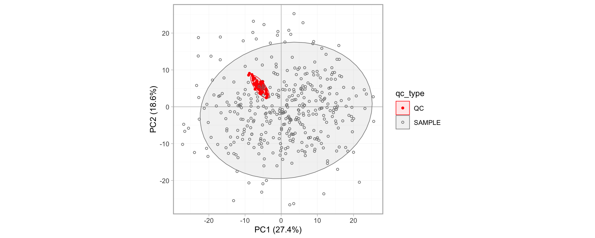
20. Saving Final Dataset (Full Dataset)
We now save the final, drift-corrected and QC-filtered concentration data as a wide CSV table, which then will be used for Part 2. Have fun! :)
# QC filter data
d_final <- d_filtered |>
filter(qc_type == "SAMPLE", !str_detect(lipid, "ISTD")) |>
pivot_wider(id_cols = c(sample_id, qc_type), names_from = "lipid", values_from = "conc_adj")
write_csv(d_final, here("output/results-full.csv"))